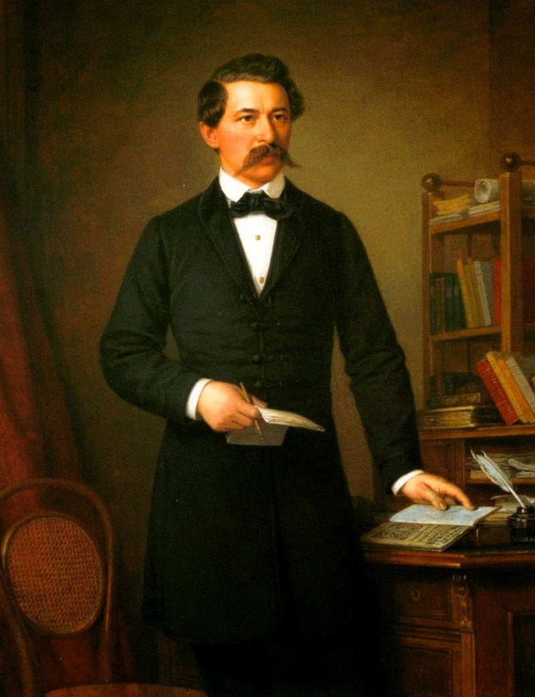
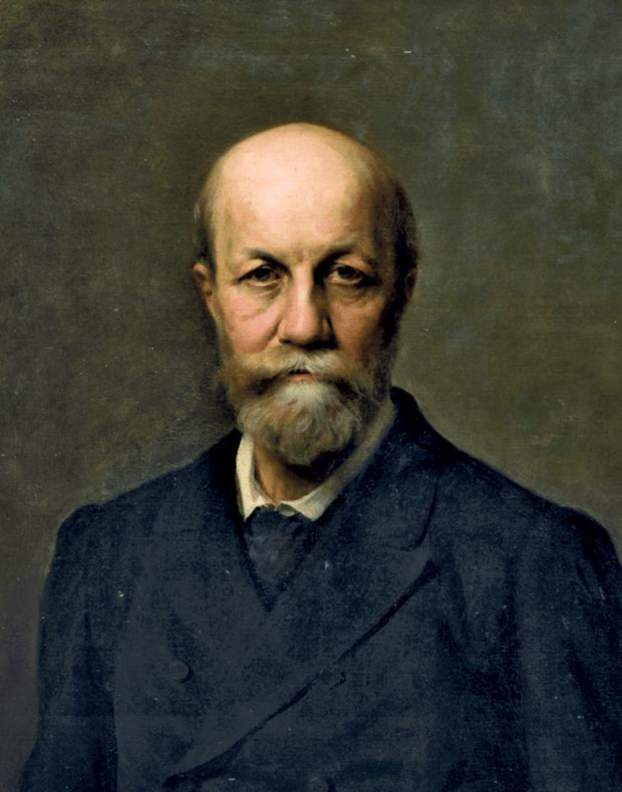

Főoldal
9.osztály
10.osztály
11.osztály
12.osztály
Vörösmarty Mihály
Petőfi Sándor
Arany János

Jókai Mór

Hangoskönyv egy olvasmányról:
Homérosz: Iliász
(Részletek)
Homérosz: Odüsszeia
(Részletek)
Szophoklész: Antigoné
(Részletek)
Boccaccio: Dekameron
(Részletek)
Shakespeare: Rómeó és Júlia vagy Hamlet és egy vígjáték
(Részletek)
Zrínyi Miklós: Szigeti veszedelem
(Részletek)
Moliére: Tartuffe
(Részletek)
Voltaire: Candide
(Részletek)
Goethe: Faust
(Részletek)
Puskin: Anyegin
(Részletek)
Katona József: Bánk bán
(Részletek)
Vörösmarty Mihály: Csongor és Tünde
(Részletek)
Petőfi Sándor: A helység kalapácsa
(Részletek)
Jókai Mór: Az arany ember
(Részletek)
Madách Imre: Az ember tragédiája
(Részletek)
Stendhal: Vörös és fekete
(Részletek)
Balzac: Goriot apó
(Részletek)
Gogol: A köpönyeg
(Részletek)
Tolsztoj: Ivan Iljics halála
(Részletek)
Móricz Zsigmond: Az Isten háta mögött
(Részletek)
Kosztolányi Dezső: Édes Anna
(Részletek)
Thomas Mann: Tonio Kröger, Halál Velencében
(Részletek)
Franz Kafka: Átváltozás
(Részletek)
Albert Camus: Sziszüphosz mítosza
(Részletek)
Brecht: Kurázsi mama
(Részletek)
Illyés Gyula: Puszták népe
(Részletek)
Ottlik Géza: Iskola a határon
(Részletek)
Örkény István: Egyperces novellák; Tóték (dráma)
(Részletek)